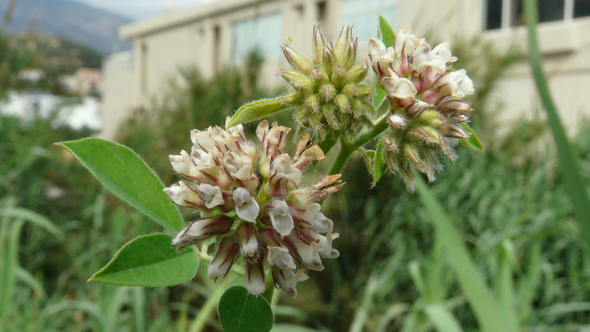
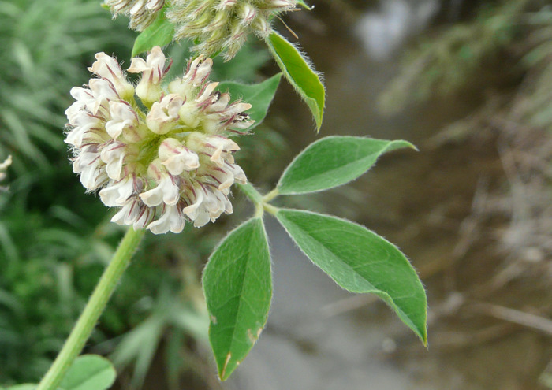
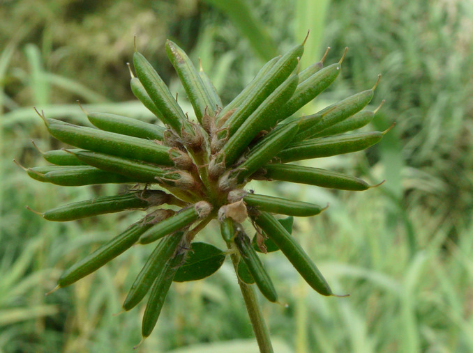
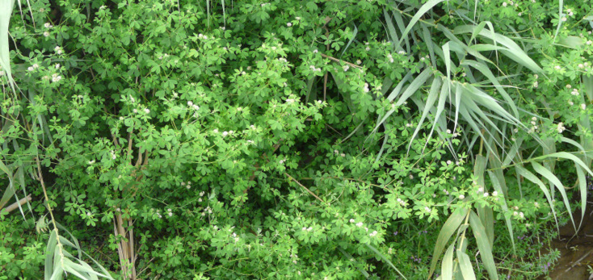

| PHRYGANA | Fauna | Flora | Galles | liste des espèces |
contact -
info - commentaires phrygana1 (at) gmail.com |
| Particularités crétoises | nouveautés | Mines | ressources naturelles |
| Dorycnium rectum (L.) SER. |
| 168 | Flora | FABACEAE LINDl. | Loteae | Dorycnium MILL. |
 Dorycnium rectum Plakias 06 juin 2010 |
| (fr) la Dorycnie dressée (it) Trifoglino palustre (es) herba de la inflamació, Carretón bravo (en) Greater Badassi (de) Aufrechten Backenklee | |
| Feuilles: composées à 5 folioles, pubescentes, obovales, cunéées et pétiolées, vert glauque en dessous; stipules plus petites que les folioles, ovales aiguës, presque aussi longues que le pétiole | |
| Tiges: pubescentes, un peu ligneuses à la base, ramifiées | |
| Fleurs: couronne 5 - 6 mm, blanc rosé; calice de 3 mm à dents égales. Fleurs groupées (entre 20 et 40) en têtes arrondies, supportées par un long pédoncule (20-80 mm) | |
| Fruit: une gousse droite, linéaire-oblongue de 10 - 20 mm, mucronée et de section arrondie; graines petites ovoïdes ou globuleuses (1.1 x 0.7-1.2 mm), de couleur brun clair à brun foncé | |
| Hauteur: 50 - 180 cm | Type biologique: hémicryptophyte ramifié |
| Floraison: mai juin (-juillet) | |
| Altitudes: 0 - 500 m | |
| Statut en Crète: indigène | |
| Biotopes en Crète: lieux humides et frais, orées de forêts de Platanus orientalis, fossés, ruisseaux, endroits marécageux | |
| Distribution: région Méditerranéenne | |
 Dorycnium rectum Plakias 06 juin 2010 |
 Dorycnium rectum Plakias 06 juin 2010 |
 Dorycnium rectum Plakias 06 juin 2010 |
| 01 juiillet 2013 |
| © paul fontaine -- © Phrygana.eu 2007 -- 2013 |